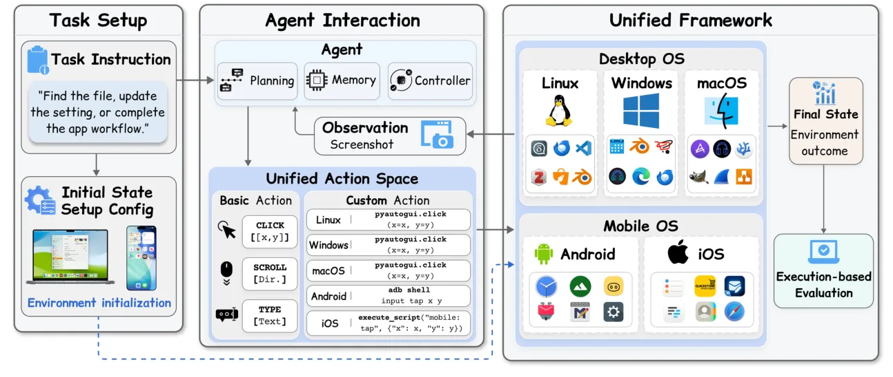
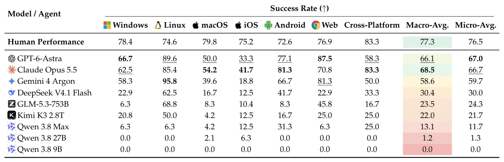
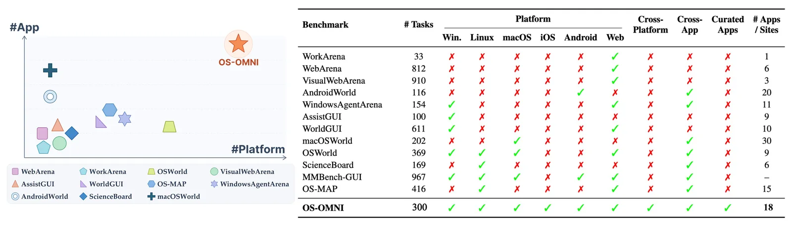

O problema da fragmentação de plataformas
Agentes de uso de computador estão evoluindo rapidamente. Eles não precisam mais apenas clicar em botões isolados; o objetivo real é completar metas de usuários que envolvem múltiplas etapas e aplicações. No entanto, a maioria dos benchmarks existentes testa esses agentes em ambientes isolados: apenas web, apenas mobile ou apenas desktop. Isso cria uma ilusão de competência. Um agente pode ser excelente em navegar em um site, mas falhar completamente ao precisar transferir dados para um aplicativo de planilhas no desktop ou sincronizar isso com um calendário no celular.
O paper OS-Omni, da OS-Omni Team, questiona se um único agente generalista consegue executar fluxos de trabalho de longo prazo (long-horizon workflows) que atravessam diferentes sistemas operacionais e mantêm estados persistentes de aplicativos. A ideia central é simples, mas desafiadora: simular o uso real de um computador, onde o usuário alterna entre janelas, dispositivos e serviços, e o agente deve rastrear essas mudanças sem perder o contexto.
Os autores argumentam que a avaliação baseada apenas em superfícies de software únicas não captura a complexidade real. Por exemplo, atualizar um calendário em um desktop envolve diálogos tradicionais, enquanto no celular pode exigir rodas de seleção (picker wheels) e teclados virtuais. Estender a duração da tarefa aumenta a carga sobre a memória do agente, que precisa coordenar ações parciais e verificar resultados finais consistentes.

Como o OS-Omni funciona
O OS-Omni é um benchmark vivo e executável, lançado em ondas versionadas. A primeira versão (v1) contém 300 tarefas: 48 por plataforma (Windows, Ubuntu, macOS, iOS, Android e Web) e 12 fluxos de trabalho cross-platform que combinam um desktop com um telefone Android. O ambiente é projetado para ser reprodutível, com inicialização controlada e adaptadores específicos para cada plataforma.
A infraestrutura do OS-Omni permite que o agente receba instruções e observe o estado atual do sistema em cada passo. As ações são validadas e executadas pelo controlador da plataforma. Para tarefas que cruzam plataformas, o setup é unificado: um desktop (Ubuntu ou Windows) exibe um dispositivo Android companion através do scrcpy. O agente interage com ambos usando mouse e teclado, sem necessidade de endpoints separados ou transferências mediadas por host.
Um ponto crucial é o protocolo de avaliação. O sucesso não é medido pela similaridade da trajetória do agente com a de um humano, mas pelo estado final do ambiente. Se o agente cumpre a meta, o sistema verifica se o estado final (sT) corresponde ao esperado pela função avaliadora (g). Isso significa que o agente pode tomar caminhos diferentes, desde que o resultado final — como um item no carrinho, uma entrada no calendário ou um arquivo exportado — esteja correto e persistente.
Complexidade e escala das tarefas
Para entender a dificuldade, comparem os números. Tarefas no OSWorld, um benchmark anterior focado em desktop, exigem em média 15 passos de interação e 111 segundos. No OS-Omni, os usuários humanos levam em média 67,54 passos de interação e 200,97 segundos para completar as tarefas. Isso não é apenas uma questão de ter mais plataformas; é uma questão de profundidade. As tarefas exigem que o agente rastreie registros parcialmente atualizados, adapte-se a convenções de UI diferentes e comprometa mudanças que sobrevivam a inspeções rigorosas.
Os fluxos de trabalho cross-platform são particularmente desafiadores. Eles exigem que o agente mantenha contexto entre aplicações. Por exemplo, uma tarefa pode envolver comparar suprimentos em um serviço de compras, adicionar itens ao carrinho, atualizar uma planilha de orçamento no desktop, criar entradas de calendário no celular e enviar uma mensagem com detalhes anexados. Nenhuma dessas etapas é isoladamente complexa, mas o conjunto exige coordenação e consistência de estado.
O ambiente inclui aplicativos de estado persistente controlados, como contas, carrinhos, orçamentos, calendários e mensagens. Isso evita que o agente dependa de serviços externos instáveis ou de interfaces web que mudam frequentemente. A consistência do estado é vital: se o agente esquece de salvar uma alteração ou usa dados obsoletos de uma janela anterior, a tarefa falha.

Resultados: A lacuna entre agentes e humanos
Os resultados do OS-Omni v1 revelam disparidades significativas. O melhor agente avaliado, Claude Opus 5.5, alcançou uma taxa de sucesso média de 68,5%, ficando 8,8 pontos abaixo da referência humana de 77,3%. No entanto, essa média esconde falhas estruturais em certas plataformas. Modelos de fronteira superam humanos no Linux, mas ficam para trás por mais de 25 pontos no iOS e macOS.
Essa assimetria sugere que os agentes atuais não são robustos o suficiente para lidar com as nuances de diferentes ecossistemas. O Linux, com suas interfaces mais padronizadas e acessíveis via linha de comando ou ferramentas de automação tradicionais, pode ser mais previsível para agentes baseados em texto ou código. Já iOS e macOS, com suas convenções de UI mais complexas e restrições de sandbox, apresentam barreiras maiores.
Os autores destacam que o problema não é apenas a percepção visual, mas a manutenção de estado. Em fluxos longos, os agentes tendem a 'esquecer' estados anteriores ou a falhar em atualizar corretamente os registros compartilhados entre aplicativos. Isso é crítico para tarefas que exigem consistência, como atualizar um orçamento enquanto se adiciona itens a um carrinho.

Limitações e o que falta
O OS-Omni não é perfeito. A primeira versão foca em 12 fluxos cross-platform, o que é um começo, mas ainda é um subconjunto limitado de tarefas reais. Além disso, a avaliação depende de verificadores finais programáticos, que podem não capturar nuances semânticas ou contextuais que um humano perceberia. Se a função avaliadora for mal definida, o agente pode 'enganar' o sistema sem realmente cumprir a intenção do usuário.
Outra limitação é a dependência de aplicativos de estado persistente controlados. Embora isso garanta reprodutibilidade, não reflete totalmente a imprevisibilidade da web real, onde APIs mudam e interfaces se adaptam. Agentes treinados ou avaliados apenas nesse ambiente podem não generalizar bem para a web aberta.
Os autores também notam que a análise qualitativa revela erros comuns, como falhas em parsing de ações ou perda de contexto visual em telas complexas. Isso indica que, embora os modelos de linguagem visual (VLM) estejam avançando, a integração com o sistema operacional ainda é frágil. A lacuna entre agentes e humanos permanece grande, especialmente em tarefas que exigem raciocínio de longo prazo e adaptação a novas interfaces.
Conclusão: O caminho para agentes generalistas
O OS-Omni estabelece um novo padrão para avaliar agentes de uso de computador. Ao focar em fluxos de trabalho longos e multiplataforma, ele expõe as fraquezas atuais dos modelos em manter estado e consistência. Os resultados mostram que, embora os agentes estejam melhorando, eles ainda estão longe de ser generalistas robustos.
Para avançar, a pesquisa precisa focar em melhorar a memória de longo prazo, a adaptação a novas interfaces e a verificação de estado em tempo real. O benchmark fornece a infraestrutura para isso, permitindo que pesquisadores testem novas abordagens em um ambiente controlado, mas realista. O OS-Omni não é o fim da linha, mas um marco necessário para entender o que ainda falta para que agentes de IA sejam verdadeiramente úteis no dia a dia.
O que fica
- O benchmark expõe agentes a 6 plataformas e fluxos que exigem transição entre elas, revelando falhas graves em manter estado consistente.
- Agentes de ponta superam humanos no Linux, mas falham por mais de 25 pontos no iOS e macOS, mostrando viés de plataforma.
- A avaliação foca no estado final do sistema, não na trajetória, exigindo que o agente deixe o software em um estado verificável.
- Tarefas exigem em média 67 passos de interação, muito acima dos benchmarks anteriores, testando memória de longo prazo.
Paper original: OS-Omni: Benchmarking Generalist Computer-Using Agents on Long-Horizon Workflows Across Platforms
Comentários
Nenhum comentário ainda. Seja o primeiro.